“Problemi di encoding. Lo sentiamo e lo diciamo varie volte quando si leggono caratteri “strani”, che di strano non hanno proprio niente, in posti dove non ci aspettiamo. Sono solo caratteri sbagliati. Perché si presentano? Un problema affrontato e risolto brillantemente nel 1992 che però spesso viene preso sotto gamba.”
A parlarcene, in una presentazione frontale nella Sala Multifunzione del Comune di Bedano, è stato Francesco Sblendorio, sviluppatore Java di JobRapido di Milano.
Nella seconda parte della serata Mattia Piccinetti ci ha guidato in una sessione pratica, mani sulla tastiera.
Dopo il meetup, pizza e birra al Bivio di Manno.
L’incontro è stato gratuito: il costo dell’affitto della Sala è stato sostenuto da TicinoXP.
Le slide della presentazione sono disponibili qui.


 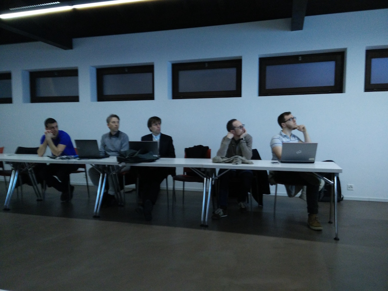
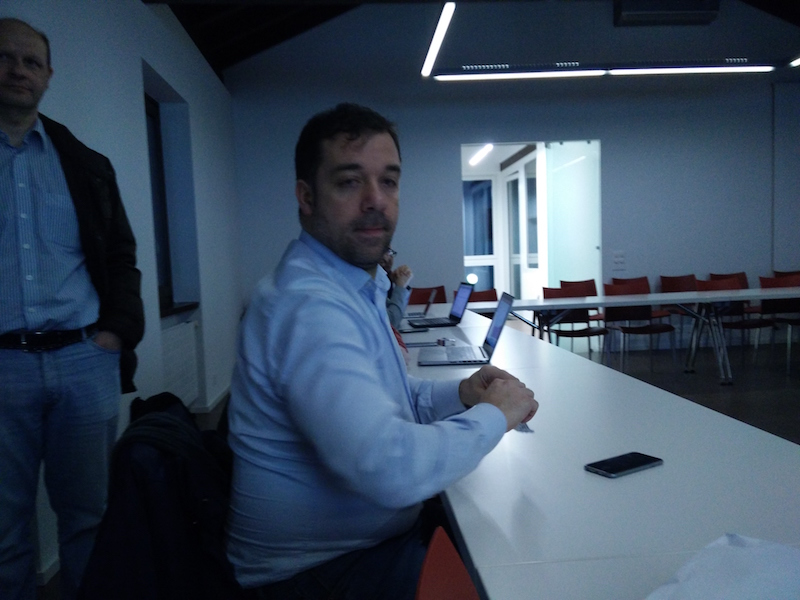
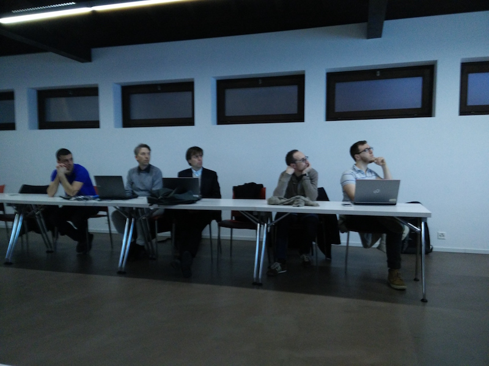
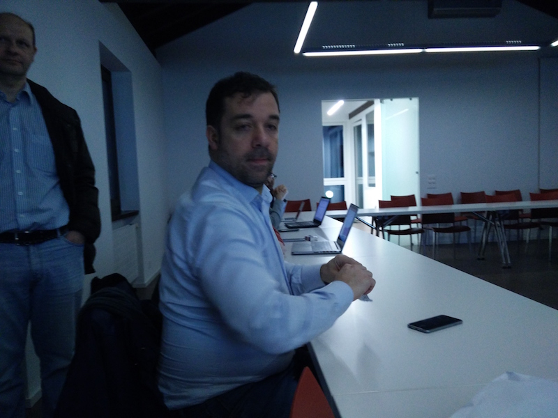

 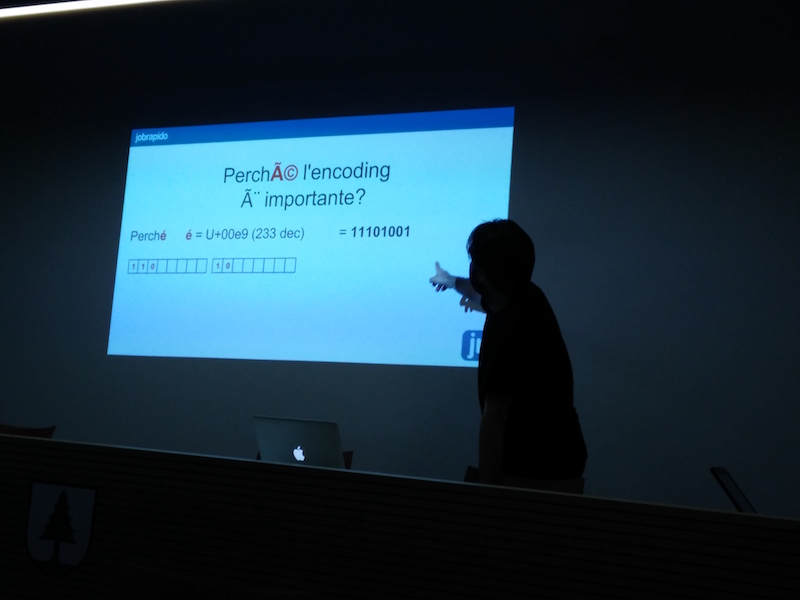
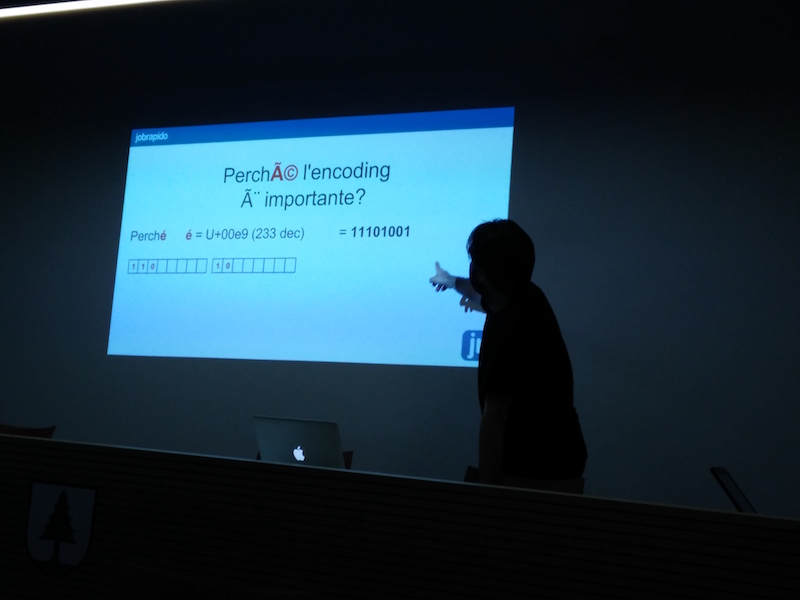
 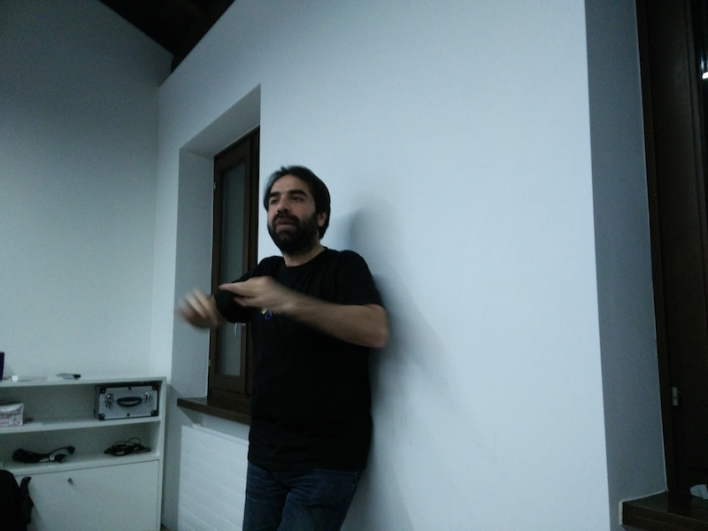
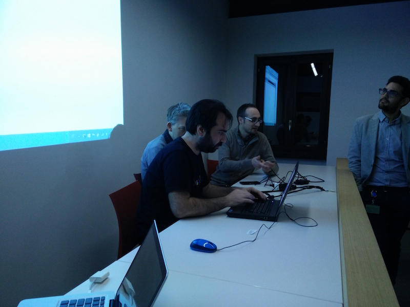
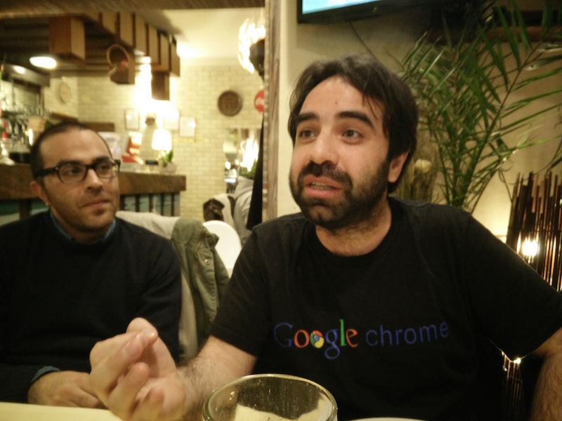
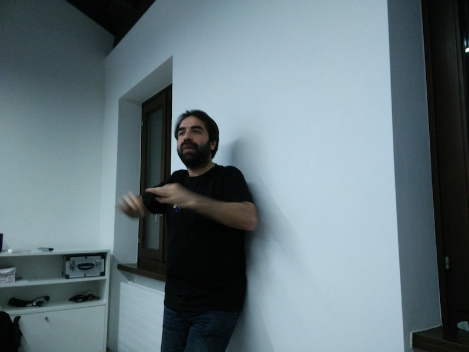
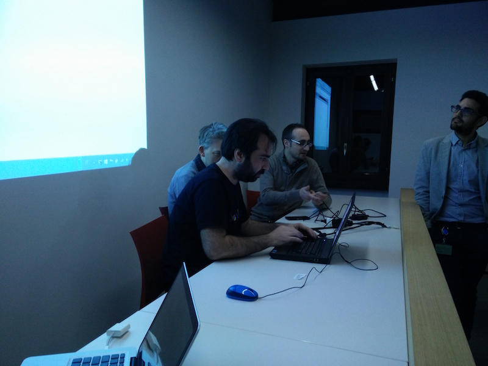
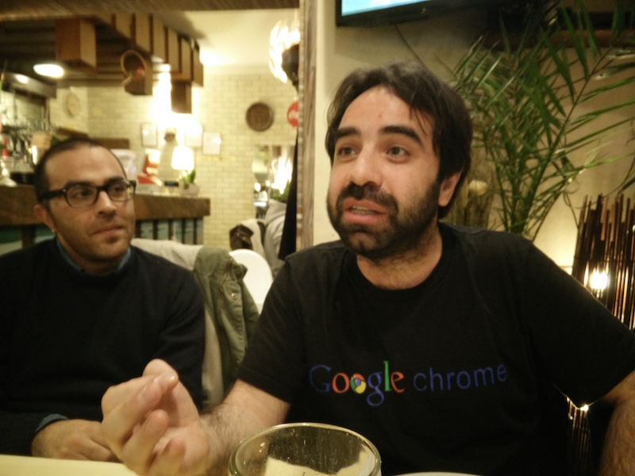